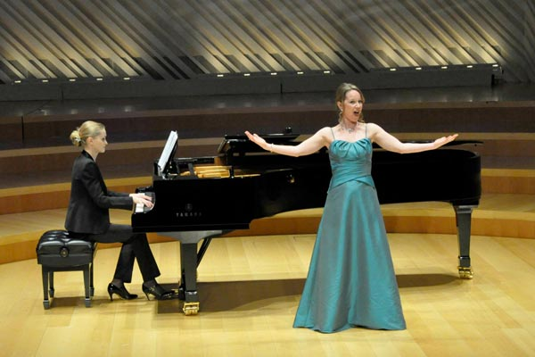
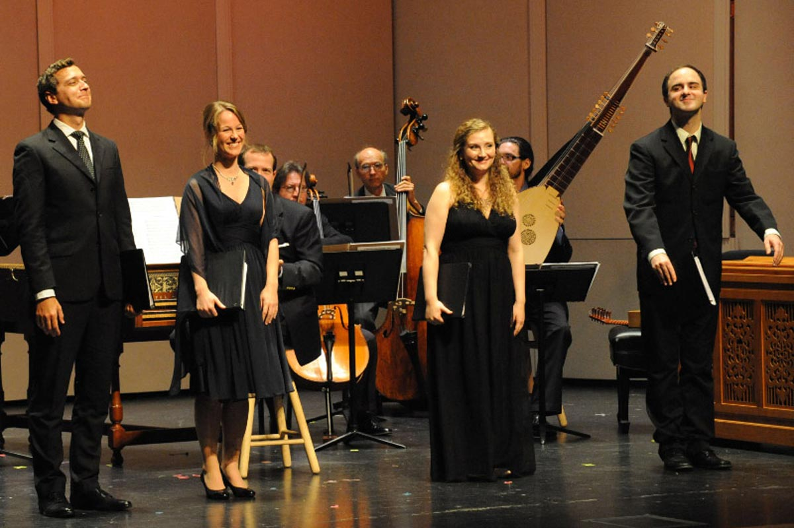

Bio
Listen/Watch
Photos
Schedule
Press
Press Quotes
Press Packet
Contact
Performance Photos
Click an image to view full-size.

Mozart
Vespers
| Manhattan Concert Productions, Carnegie Hall
×
credit: www.groupphotos.com
Opera Gala | Miami Choral Academy (Seraphic Fire)
×
Belinda in
Dido & Aeneas
| Bach Collegium San Diego
×
Finals Concert | Oratorio Society of New York Solo Competition
×
©2013 Tim Dwight
Showcase Concert | Carmel Bach Festival, VBA Fellows
×

Rehearsing Glière's
Concerto for Coloratura Soprano
| Spartanburg Philharmonic
×